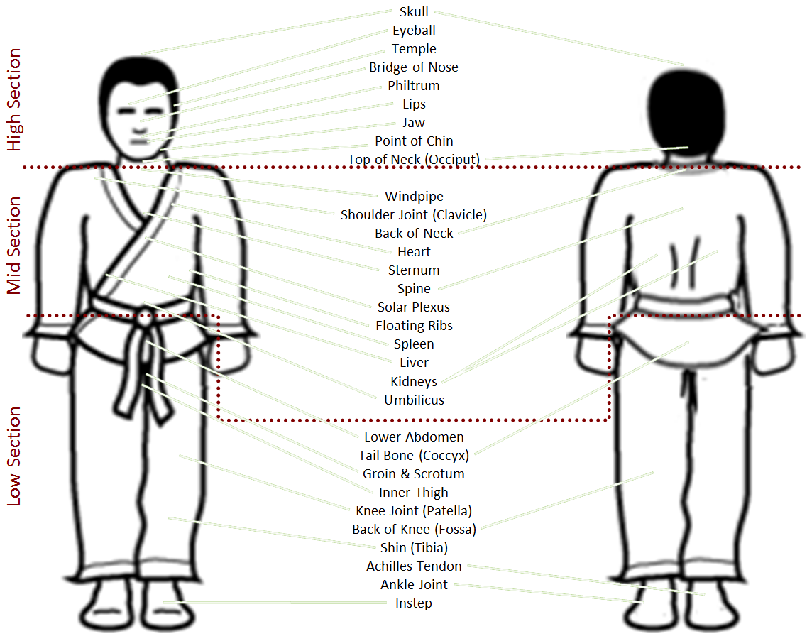
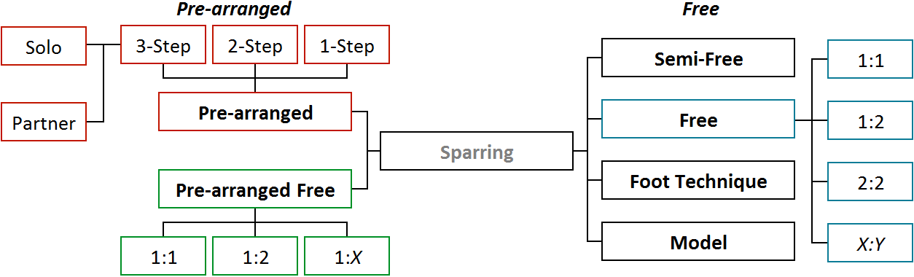

{{Text.SchoolName}} would like to express our sincere gratitude and thanks to Senior Master Jamie Moore 8th Degree black belt, who’s Authentic Taekwon-Do Grading Syllabus (Sixth Edition, July 2007) provided the basis for this book. Without this inspiration, our student handbook would look very different. We would like to also express our appreciation to Sabum Scott Bower 6th Degree black belt, Shane Flavell 4th Degree black belt and Matthew Wood 4th Degree black belt for their contributions to the Authentic Taekwon-Do Grading Syllabus.
Further, {{Text.SchoolName}} would like to thank Boo-Sabum Nicholas Campbell 3rd Degree black belt (author, researcher) and Guy Pedashenko 2nd Degree black belt (figure drawings) for their contributions.
Some of the information contained in this handbook has been derived from General Choi Hong Hi’s Encyclopaedia of Taekwon-Do.
Taekwon-Do in Korean Hangul
By Nuno Nogueira (Wikipedia cc-by-sa-2.5)
What is Taekwon-Do?
Taekwon-Do (태권도) is a Korean system of self-defence. 태 (tae, tay) can be translated as “to strike or break with foot”; 권 (kwon) can be translated as “to strike or break with fist”; and 도 (do) can be translated as “art” or “way”. Therefore, Taekwon-Do can be loosely translated as “the art of hand and foot fighting”. Taekwon-Do is pronounced “tay-KWON-dough”.
In addition to physical aspects of the art, students of Taekwon-Do also learn to develop mental and social capabilities such as respect for themselves and others, integrity, perseverance, self-control and personal resolve. It is this mental conditioning and philosophy that separates the true practitioners from those who are only concerned with mastering the fighting aspects of the art.
At {{Text.SchoolName}}, we rely on the Chang-Hon Pattern System and the ITF Taekwon-Do syllabus as the basis of our training and gradings. In our pursuit of being a champion of freedom and justice (a tenant of Taekwon-Do meaning intellectually curious), we also look beyond Taekwon-Do to study techniques and strategies from other sources to enhance our training, knowledge and skill-set. To date we have drawn information from modern sports science, Bujinkan Bodo Taijutsu (Ninjutsu), Wing-Chun (Kung-Fu), and Jiu-Jitsu (both traditional and BJJ). We are also always open to instructor exchanges with other disciplines in order to share and expand our understanding and techniques; something that is unfortunately rare among other arts and schools.
What Are The Belts / Levels?
There are ten Kup (colored belt) levels, each with its own belt:
Level
Belt Color
Belt Color Represents
10th Kup
White Belt
White signifies innocence, as that of a beginning student who has no previous knowledge of Taekwon-Do.
9th Kup
White Belt / Yellow Tip
8th Kup
Yellow Belt
Yellow signifies the earth from which the Taekwon-Do tree sprouts and takes root as the Taekwon-Do foundation is being laid.
7th Kup
Yellow Belt / Green Tip
6th Kup
Green Belt
Green signifies the Taekwon-Do tree’s growth as the Taekwon-Do skill begins to develop.
5th Kup
Green Belt / Blue Tip
4th Kup
Blue Belt
Blue signifies the sky and the heavens, towards which the Taekwon-Do tree matures into a towering tree as training progresses.
3rd Kup
Blue Belt / Red Tip
2nd Kup
Red Belt
Red signifies danger, cautioning the student to exercise control and warning the opponent to stay away.
1st Kup
Red Belt / Black Tip
10th Kup (white belt) is the lowest and 1st Kup (red belt / black tip) is the highest.
What About Black Belts?
In Taekwon-Do, there are nine degrees of black belt; 1st degree being the lowest and 9th degree the highest. These nine levels are further broken down into four groups:
1st – 3rd Degree: Boo-Sabum (boo-SA-boom), Assistant Instructor or National Instructor.
4th – 6th Degree: Sabum (SA-boom), International Instructor.
The suffix “Nim Kke” (NIM-gay) which means Sir/Ma’am, is often added to the black belt titles listed above. Junior black belt holders under the age of 13½ years are referred to as Cho Dan Bo (CHO-dan-bow). Black belt holders that are not instructing are referred to as Cho Dan (CHO-dan).
Information For Students
As a student, it is important to remember that your conduct both inside and outside of the do-jang reflects upon your instructor, your school and Taekwon-Do. It is therefore very important that you never misuse Taekwon-Do.
Terminology
There are a number of terms used throughout this manual that have a specific meaning:
“May” - Advises that you are allowed to do the described action if you wish.
“Should”, “Might” - Advises that in most situations the described action will be undertaken.
“Must”, “Will” - Advises that in all situations the described action will be undertaken.
What Is The Correct Taekwon-Do Uniform?
A dobok (DOUGH-bok) is the official training uniform for Taekwon-Do. Students should wear white ITF doboks together with the appropriate colored belt. The dobok has the ITF badge on left side of jacket and students should also have the {{Text.SchoolName}} badge on the right side. The back of the jacket shows the ITF tree. Belt tips should be 10mm wide, made of cotton material and located approximately 5cm from the end of the belt.
Dobok’s worn by black belts differ slightly from Kup students as the jacket is trimmed in black around the bottom. The dobok’s of international instructors also have a line of black trim that runs down the arm and leg of the uniform. {{Text.SchoolName}} instructors and black belts may occasionally wear an unofficial black ITF dobok for demonstrations or to indicate when the class’s repertoire will be focused on skills that fall outside of the ITF Taekwon-Do syllabus.
Doboks should not be worn outside of the do-jang unless you are travelling to or from training, a grading or on special occasions as directed by the instructor.
New students that do not have a dobok should wear loose fitting clothing to allow for a full range of motion of the arms, legs and body. A loose fitting t-shirt and a thin pair of sweatpants are advisable and white or otherwise light colors are preferred. Please note that this clothing will likely get dirty and may become torn (doboks are reinforced to help survive the rigors of training).
How Do You Tie A Belt?
There is a story about a snake that some instructors use to help younger students in Taekwon-Do remember how to tie their belts correctly. While intended to teach children, adults can use the story as well to help them remember the proper tying technique:
Grab the head of the snake (the side of the belt without the colored tip) with your left hand. Never let go of the snake’s head, else it will bite! With your right hand, wrap the body of the snake clockwise around your waist. Since you must hold onto the head, you need to put the snake’s body over the top of its neck (else it will fall off your waist!). Wrap the snake’s tail over its neck and under its body so that its tail is tickling your belly. Make sure the snake’s neck and tail are the same length (being careful not to let the snake bite when you measure!). Since you cannot hold the head of the snake all through class, we will need to choke the snake so it cannot bite. Wrap the tail over and around the neck while switching the snake’s head to your right hand and its tail to your left. Pull the snake tight with both hands (horizontal to the floor). Ggah! Aack! Blahh… Congratulations! Now the snake cannot bite you and you have now properly tied your belt!
If your belt is long, you may need to wrap it around your waist more than once. The ends of the belt should be long, but not below your knees. The colored tip (or your name/rank for black belts) should end up on your left side.
What Is A Do-Jang?
A do-jang (DOUGH-jang) is the training hall where the student comes to learn the art of Taekwon-Do. A suitable do-jang requires a well-trained black belt instructor as well as appropriate facilities and equipment. General rules and regulations that apply to everyone within a do-jang include:
Individuals must be respectful to themselves, to others and to the do-jang. Refrain from swearing, disruption of the class, risking damage to the hall, abusing equipment, etc.
The do-jang must be returned to the same (or better) condition it was in prior to class (tables and chairs repositioned, equipment stored, trash removed, floors cleaned, etc.).
Food, drinks (other than water or sports drinks) and smoking are not allowed in the do-jang.
An integral part of the training is an observance of certain traditions and behaviours. These protocols do not represent any religious symbolism; rather they serve to pay respect to the oriental cultural origins of Taekwon-Do. Within the do-jang as a student, you should conform to the following protocols:
The only thing you obey above your instructor is your own body. If you have a question or concern, it must be raised respectfully at an appropriate time. If an exercise or technique is painful or otherwise feels uncomfortable, cease the activity imminently and inform your instructor as soon as possible. No technique or instruction should be painful.
Out of respect, both you and your dobok should be clean and tidy. For safety reasons, nails must be cut short and hair should be short or tied back. You should not wear perfume, make-up, watches or jewellery. Rings that cannot be removed should be taped up.
New students and visitors should be introduced to the instructor. Students must treat newcomers with courtesy, provide seating and provide advice or assistance as necessary.
When called to the front of class, students must stand, bow, move to the outside of the formation (by walking along the backs of students within their line) and then to the front of class. Do not walk directly in front of your line as you could be struck by a fellow student executing a technique.
No one is allowed to teach without the instructor’s permission. The exception to this rule is when you are the senior student and your instructor is not in attendance for the beginning of class. In this case, it is your responsibility as the senior student to act as the instructor and start class on time.
Students must report all injuries to the instructor.
An official ITF dobok should be worn during class.
Students entering or leaving the do-jang must bow to the front of the hall to pay respect.
When individually greeting a fellow student, students should bow at a proper distance (approximately “handshake” distance). The most senior belts should be greeted first.
At the beginning of class, students must bow to the instructor, who also bows to the class.
The class should recite the oath prior to training.
Students are not allowed to leave training without the instructor’s permission.
Students should meditate for one minute cross-legged after training to calm their minds and to visualize the lessons learned.
At the end of class, students must bow to the instructor, who also bows to the class.
Class protocol is learned gradually; do not expect to remember everything after reading this manual or even after attending a few training sessions. Your fellow students will be happy to assist you.
How Do You Bow?
To paraphrase the founder of Taekwon-Do General Choi Hong Hi, we are all students of Taekwon-Do. As such, respect is paid equally to all practitioners of Taekwon-Do. 9th Dan Grandmasters who have dedicated their lives to the study and practice of Taekwon-Do bow to the same height/angle as a white belt that started today. To perform a respectful bow, the following protocol is observed:
Bowing should always be done from a stationary position, should be executed reasonably slowly yet will generally be completed beginning to end in around 5 seconds.
Bowing starts from the “charyot” (chair-E-ut, meaning attention) position. If you are greeting a fellow student individually, you should be approximately “handshake distance” apart.
Charyot Position: Facing your fellow student, stand up straight while bringing your heals together with your toes angled outward at approximately 45°. Your hands should be at your side, elbows slightly bent and fists lightly clenched.
The senior belt will initiate the bow by either saying “kyong ye” (koo-KNEE, meaning bow) or by simply bowing themselves. Bow approximately 15° from your waist towards your fellow student while maintaining eye contact.
During the bow, both students should share a mutual greeting of “Taekwon” (tay-KWON). This is done as a common greeting as well as a sign of mutual respect.
The junior belt should wait for the senior belt to rise before rising themselves.
What Is The Student Oath?
The student oath and its tenants briefly summarize the philosophy that drives Taekwon-Do. The student oath should be recited as follows:
I shall observe the tenets of Taekwon-Do.
I shall respect the instructor and seniors.
I shall never misuse Taekwon-Do.
I shall be a champion of freedom and justice.
I shall build a more peaceful world.
The tenants: Courtesy, Integrity, Perseverance, Self-Control and Indomitable Spirit.
The Chang-Hon Pattern System, on which {{Text.SchoolName}} relies, was developed by General Choi Hong-Hi and is named after his pseudonym “Blue Cottage”. The 24 officially recognized patterns (tuls) correspond to 24 hours in a day; a continuously repeated cycle that in turn represents one's lifetime. “The life of a human being perhaps 100 years, can be considered as a day when compared with eternity”. In addition to the 24 officially recognized patterns, there are two retired patterns (Ko-Dang and U-Nam) as well as three exercises (4-Directional Punch, 4-Directional Block and 4-Directional Thrust) that complete the pattern system. These exercises are known as a form, hyeong, poomsae or kata in other branches of Taekwon-Do and other martial arts.
Students at each Kup level will learn a specific pattern and/or pattern-like exercises. After achieving a Black Belt, students learn up to 3 new patterns for each Dan level.
Questions?
If you ever have any questions, do not hesitate to ask your fellow students or your instructor.
Vital Spots
Presented below is an overview of many (though not all) of the body’s vital spots:

Each vital spot is matched with at least one attacking tool. The exposed area of the vital spot as well as optimum angle of attack are the major determining factors in identifying an appropriate attacking tool.
For example, the most appropriate attacking tool for the Solar Plexus is the Straight Fingertip Thrust due to the small size and vertical orientation of the target at the optimum angle of attack (directly in front of the attacker). A Full Fist Punch would not be an optimum attacking tool due to the size differential between the target and the attacking surface of the fist. A Side Back-Fist Strike would not be an optimum attacking tool due to the angle of attack (90° to the attacker). This is not to say that either the Full Fist Punch or the Side Back-Fist Strike would be ineffective when striking the Solar Plexus, just that their effectiveness is limited due to a mismatch of surface areas or angles of attack. In both cases it would be more effective to target another vital spot with the technique.
Grading Syllabus
What To Expect
Gradings are generally conducted every 3-4 months. As often as possible, a grading panel that includes external instructor(s) is brought in to assess the students’ abilities. The use of external instructors is best for all involved as students’ abilities are evaluated more objectively and instructors are able to receive feedback on their training regimen and outcomes. A special fee is required for gradings in addition to your training fees to cover the additional costs of the grading (wooden boards, belts, the grading panel, venue hire, etc.).
At a grading, students will be asked to demonstrate the pattern and/or exercises for their current Kup. Students should also expect to be asked to properly demonstrate the patterns and/or exercises required of their previous Kups. Students will also be asked questions based on all of their learned knowledge/theory and can also expect questions pertaining to the application of techniques learned from their patterns. To aid in study, some example theory questions have been included below for reference.
While it is the responsibility of your instructor to fully prepare you for your next grading, it is also your responsibility as a student to ensure that you fully understand and can properly demonstrate the knowledge, techniques and abilities required of you to the grading panel.
Gradings Are Not A Profit-Center
Students are only put forward for gradings when both they and their instructor are confident in their abilities and knowledge of the syllabus. The first three to four gradings can occur in rather quick succession while subsequent gradings have a tendency to be further apart. The reason for this is to build a new student’s confidence in the art, to capitalise on their enthusiasm and to ensure the basics are being properly learned.
Wooden Boards
Board breaks are not required, but a reasonable demonstration of your abilities to the grading panel is. Students who are unable to break boards due to realities outside of their control must speak with their instructor before a grading to determine an alternate.
Able adult students will be required to break pine boards that measure 290*290*19mm as required within the grading syllabus. Able adolescent students under the age of 13½ years may be required to break pine boards that measure 290*290*15mm. Due to the difficulty of obtaining pine boards 15mm thick, students my substitute a pine board measuring 200*290*19mm (with the 290mm side cut across the grain) for their own grading preparations.
Board breaks, in addition to being a good show for the spectators of a grading, are utilized by the grading panel to help assess your abilities to exert power effectively into a given target. The characteristics of wooden boards vary greatly based on quality and seasoning of the pine boards. This reality is known to the grading panel and every effort is made to ensure the wooden boards in use are suitable for grading purposes. However, due to this natural variability a missed break does not necessarily doom your grading, as the panel can still assess your abilities based on the recoil of the board holder(s) as well as your own reaction.
10th Kup Students (White Belt)
The white belt signifies the innocence of a beginning student who has no previous knowledge of Taekwon-Do.
{{Text.Grading.Knows}}
The correct pronunciation of Taekwon-Do; tay-KWON-dough.
What Taekwon-Do loosely translates to; The art of hand and foot fighting.
The name and rank of the Founder of Taekwon-Do; General Choi Hong Hi, 9th Degree Grandmaster.
Dates Taekwon-Do and the ITF were founded; Taekwon-Do: 11 April 1955, ITF: 22 March 1966.
Details about the correct doboks worn by all ITF students; White, ITF badge on front left, ITF Tree on rear.
Meaning of the white belt; Innocence, no previous knowledge of Taekwon-Do.
Why 3-Step Sparring is executed with the footwork “Outside, Inside, Outside” or “Inside, Outside, Inside”; To maintain proper distance.
Details about the belt system, Dan classifications and the colors of the belts; White, Yellow, Green, Blue, Red, Black. 10 Kup levels and 9 Dan levels.
The total number of patterns (tuls) in Taekwon-Do as well as what that number represents; 24, representing the hours in a day and by that an entire lifetime. Two additional patterns have been retired.
The science behind Taekwon-Do; Sine wave and reaction force.
{{Text.Grading.Demonstrates}}
Saju-Jirugi, 4-Directional Punch; Performed in your own time.
Saju-Makgi, 4-Directional Block; Performed in your own time.
Solo 3-Step Sparring; Performed without a partner in your own time.
Parallel Stance Punching; Performed with half a sine wave (“Up/Down”).
Sitting Stance Punching; Performed with full sine wave (“Down… Up/Down”).
Front Leg Raising Kick.
Front Snap Kick (from walking stance).
1-Leg Bending Stance Type B.
Gold Stars (Partial Rank)
For our younger students, {{Text.SchoolName}} uses Gold Stars as a partial rank system below 9th Kup. There are 3 drills of 10 or more movements, 5 distinct skills plus theory to learn before being able to grade to 9th Kup. Younger students can find these requirements daunting so the Gold Stars break up these requirements into 4 sections:
Requirements for 1st Star:
Solo 3-Step Sparring, Parallel Stance Punching and Sitting Stance Punching.
Requirements for 2nd Star:
Saju-Jurugi, Front Leg Raising and 1-Leg Bending Stance Type B.
Requirements for 3rd Star:
Saju-Makgi and Front Snap Kick (Walking Stance).
Requirements for 4th Won-Hee Star:
Theory and consistent proper in-class behavior.
Gold Stars do not require a grading fee and are awarded after a successful in class demonstration of your acquired skills. Once you have received all 4 Gold Stars you are then eligible to grade to 9th Kup at the next grading where you will be required to demonstrate all of your learned skills to the grading panel.
{{Text.H2.KupPatternExercisesDrills}}
There is no pattern (tul) for 10th Kup students to learn before grading, but students are expected to learn two exercises; Saju-Jirugi (SA-jew JER-ree-gee, 4-Directional Punch) and Saju-Makgi (SA-jew MA-key, 4-Directional Block). 10th Kup students also learn a drill called 3-Step Sparring. This drill requires students to move their feet in a specific way, described as “Outside, Inside, Outside”. The purpose of this movement is to maintain equal distance between the two students throughout the drill.
{{Text.H2.KnowledgeTheoryInDepth}}
The Science Behind Taekwon-Do
As a 10th Kup you will be exposed to the science behind Taekwon-Do; sine wave and reaction force. Sine wave is verbalized and physically performed as “Down… Up/Down”. Utilization of the sine wave allows us to employ our body’s mass in motion as an additive force to the executing technique. You can see this force in action when you step on analog scale like the one to the right. As you step on, your weight momentarily reads as higher than it actually is because you are exerting a downward force with the help of gravity that for a moment makes it seem as though you are heavier than you are.
Reaction force acts as a counter-balance, which allows more muscles to be engaged in the execution of the technique rather than in maintaining the body’s balance. For an adult, each leg represents approximately 10% of your body mass while each arm accounts for approximately 5-6%. When this body mass is moved during a technique, the body must maintain balance and counteract any torsion (twisting) caused by the movement. With the use of reaction force, the act of counter-balancing is vastly simplified.
Taekwon-Do’s Important Dates
Taekwon-Do was founded on 11 April 1955 by General Choi Hong Hi, 9th Degree Black Belt and Grandmaster. The International Taekwon-Do Federation (ITF) was founded on 22 March 1966 to promote and encourage the growth of Taekwon-Do.
What does Saju-Jirugi mean? How many movements? What is its diagram? Is this a pattern?
What does Saju-Makgi mean? How many movements? What is its diagram? Is this a pattern?
What does the color of the white belt represent?
How do you say “Taekwon-Do” correctly? What does it mean?
Who founded Taekwon-Do? What was his rank?
On what date was Taekwon-Do founded? On what date was the ITF founded?
Describe the details of an official training uniform (dobok).
What are the belt colors in Taekwon-Do? What are the Dan ranks?
How many patterns are there in Taekwon-Do? What does that number represent?
What is the science behind Taekwon-Do? Why do we use sine-wave and reaction force?
What is the difference between a Low Block and a Low Knife-Hand Block?
What is a primary technique executed from 1-Leg Bending Stance Type B?
Show/describe a Charyot/Attention Stance (length, width, weight distribution, knees and foot angles). How do you know if it’s a left or a right Attention Stance?
Show/describe a Parallel Stance (length, width, weight distribution, knees and foot angles). How do you know if it’s a left or a right Parallel Stance?
Show/describe a Walking Stance (length, width, weight distribution, knees and foot angles). How do you know if it’s a left or a right Walking Stance?
Requirements for 9th Kup
9th Kup Students (White Belt / Yellow Tip)
{{Text.Grading.Knows}}
{{Text.LI.KupAllPriorKnowledge}}
The Student Oath and the Tenants of Taekwon-Do; See above or bolded text below.
The key features of a Do-Jang as well as the rules, regulations and protocols students are to observe within a Do-Jang; A well-trained instructor with appropriate facilities and equipment. Pay respect to the oriental cultural origins of Taekwon-Do through the protocol described above (respect, no swearing/running/food, etc.).
{{Text.Grading.Demonstrates}}
{{Text.LI.KupAllPriorPatterns}}
Chong-Ji Tul, {{Text.LI.PatternSuffix}} Diagram: a “plus sign”. Meaning: “heaven and earth, story of creation”. 19 movements.
3-Step Sparring; Performed with a partner in your own time.
Side Leg Raising Kick.
Side Piercing Kick (from sitting stance).
1-Leg Bending Stance Type A.
{{Text.H2.KupPatternExercisesDrills}}
The pattern (tul) for 9th Kup students to learn before grading is called Chon-Ji (CHONG-gee). Chon-Ji literally translates to “the Heaven the Earth”. In the orient, it is interpreted as the creation of the world or the beginning of history (like the old testament, the big-bang or dreamtime). Therefore, it is the initial pattern beginners learn. This pattern consists of 2 similar parts – one to represent Heaven and the other the Earth.
{{Text.H2.KnowledgeTheoryInDepth}}
Student Oath Expanded & Explained
The student oath and its tenants briefly summarize the philosophy that drives Taekwon-Do. Below the oath is expanded upon in order to give insight to the ideals contained behind the words.
I shall observe the tenets of Taekwon-Do. Acknowledge, observe and attempt to live according to Taekwon-Do’s tenants:
Courtesy.
Endeavour to show courtesy to all, to respect yourself and others and to maintain appropriate etiquette and manners.
Integrity.
Beyond its common definition, integrity in the context of Taekwon-Do calls on students to not only identify right from wrong but to actively engage the concepts. Have the integrity to stand for what is right and have the conscience and humility to feel guilt and admit when you have done wrong.
Perseverance.
To have the resolve to persevere time and again until you have achieved your intended result.
Self-Control.
Be in control of your thoughts and physical actions.
Indomitable Spirit.
Stand up for what you believe in, no matter the odds. Give 100% to every endeavour you undertake.
I shall respect the instructor and seniors. Students should give respect to their instructors and senior belts. In return those students senior to you should also so respect to everyone in order to earn this respect.
I shall never misuse Taekwon-Do. The lessons learned in Taekwon-Do must never be used in an unjust manor. As a student, your conduct both inside and outside the do-jang reflects upon your instructor, your school and Taekwon-Do as a whole. Any actions you undertake that violate the student oath or its tenants reflect upon us all and therefore we must all strive to represent the best that Taekwon-Do has to offer.
I shall be a champion of freedom and justice. Far from calling on you to leap tall buildings with a single bound, being a champion of freedom and justice calls upon students to be open to new thoughts, ideas and ideologies; to challenge your own beliefs and understandings; to endeavour to understand how others live and why they do things differently; to attempt to overcome misconceptions before conflicts arise; to understand the whole story before rendering judgement; and to always remain intellectually curious. Allow others to have the freedom they deserve. With the acceptance and execution of this belief, you bring justice to the world and in turn become a champion of freedom and justice.
I shall build a more peaceful world. This point embodies the application of being a champion of freedom and justice. Attempt to conduct your daily life in a more peaceful manner. Refrain from provoking aggression in others. When conflict occurs, use the ideals of being a champion of freedom and justice to help resolve the issue.
What is the interpretation of Chon-Ji (what does it mean)? What is its diagram? How many movements? Is this a pattern?
Can you tell me more about the interpretation of Chon-Ji?
What is a do-jang? What is required for a suitable do-jang? What are the general rules and regulations? What are the protocols?
Demonstrate a proper Taekwon-Do bow. Do junior students bow lower than senior students? Why/why not?
Please recite the Student Oath.
What does it mean to be a “champion of freedom and justice”?
Which sequence of foot placement is correct for 3-Step Sparring: “Outside, Inside, Outside” or “Inside, Outside, Inside”? Why is this foot placement important?
What is a primary technique executed from 1-Leg Bending Stance Type A?
How is backward motion utilized in a Side Kick? What is the attacking tool(s)? Where is your target/opponent positioned?
How is backward motion utilized in a Front Snap Kick? What is the attacking tool? Where is your target/opponent positioned?
Why do we re-chamber the leg after a kick before stepping down?
Describe an L-Stance (length, width, weight distribution, knees and foot angles). How do you know if it’s a left or a right L-Stance?
Requirements for 8th Kup
8th Kup Students (Yellow Belt)
The yellow belt signifies the earth from which the Taekwon-Do tree sprouts and takes root as the Taekwon-Do foundation is being laid.
{{Text.Grading.Knows}}
{{Text.LI.KupAllPriorKnowledge}}
Understand the Korean words used in class, and be able to use the words designated in the {{Text.ColorName}} Headed table below; Count to 10, training hall, uniform and words used for rank (grade, degree, instructor, etc.).
{{Text.Grading.Demonstrates}}
{{Text.LI.KupAllPriorPatterns}}
Dan-Gun Tul, as well as its diagram, meaning/interpretation and number of movements; Performed in your own time. Diagram: a “capital I”. Meaning: “legendary founder of Korea in 2333 BC”. 21 movements.
Free Sparring; Performed with a partner in your own time.
Stationary Turning Kick.
Back Kick from L-Stance (to the rear).
{{Text.H2.KupPatternExercisesDrills}}
The pattern (tul) for 8th Kup students to learn before grading is called Dan-Gun. Dan-Gun is named after the holy Dan Gun, the legendary founder of Korea in the year 2333 BC.
{{Text.H2.KnowledgeTheoryInDepth}}
Korean Words To Know & Learn
At this stage of your Taekwon-Do development you are expected to start to learn and understand the Korean words and commands used by your instructors. You should be able to use the words presented in the {{Text.ColorName}} Headed table below, and understand the words presented in the Grey Headed table.
Korean
Pronunciation
English
Hana
HHAA-na
One
Dool
DO
Two
Set
SAY
Three
Net
NEA
Four
Dasot
DA-sot
Five
Yasot
YA-sot
Six
Ilgop
EEL-gop
Seven
Yodul
YO-dul
Eight
Ahop
AGH-hop
Nine
Yol
YOL
Ten
Dobok
DOUGH-bok
Uniform
Do-jang
DOUGH-jang
Training Hall
Kup or Gup
GUP
Grade
Dan
DAN
Degree
Tul
TUL
Pattern
Cho Dan Bo
CHO-dan-bo
Junior Black Belt
Cho Dan
CHO-dan
Black Belt
Boo-Sabum
boo-SA-boom
Assistant Instructor
Korean
Pronunciation
English
Charyot
chair-E-ut
Attention
Kyong-Ye
koo-KNEE
Bow, Salute
Junbi
JUNE-bee
Ready Position
Baro
BAR-row
Return To Ready
Ki-hup
KEY-hup
Yell, Shout
Sijak
SEE-jaak
Begin
Tui-Tora
TEE-ru TOUR-ra
Turn Around
Swiyo
SHOW
At Ease
Anj-Oh
AN-jo
Sit, Kneel
Ee-Sang
Finished
Guman
Stop
Kur-Ki-Yer-Tae-Hae
cookie-it-TAY-hey
Face the flag
Ko-Map Sum-Nee-Da
ko-map-SUM-knee-da
Thank You
Sa-Seong
Grandmaster
Sa-Hyun
Master Instructor
Sabum
SA-boom
International Instructor
Nim Kke
NIM-gay
Sir/Ma’am
Koo ryung op see
CORE-re-oh-OPT-chay
In your own time
What is the interpretation of (who was) Dan-Gun? What is its diagram? How many movements?
Can you tell me more about the interpretation of Dan-Gun?
What does the color of the yellow belt represent?
Please count to 10 in Korean.
How do you measure up for 3-Step Sparring that involves only hand techniques? That involves a kick? That involves a knife-hand strike? Why are these measurements different?
How is backward motion utilized in a Turning Kick? What is the attacking tool(s)? Where is your target/opponent positioned?
What Dan ranks does Boo-Sabum refer to? What Dan ranks does Sabum refer to? Which Korean term would you use to refer to your Instructor?
Describe what it means to perform at Pattern Speed. When do we use Pattern Speed?
Describe how to perform a Continuous Motion. Demonstrate where Continuous Motion is used in your pattern.
How many mid-section punches are there in Dan Gun?
Requirements for 7th Kup
7th Kup Students (Yellow Belt / Green Tip)
Students who have the opportunity should participate in a Tournament in sparring, patterns, special techniques, power breaking, team or special events. Participation in a Tournament is encouraged as it will give you an additional reason to focus on thoroughly learning your patterns, to improve upon your sparring knowledge and expertise as well as give you exposure to how other students from around your region are learning and executing their Taekwon-Do training.
{{Text.Grading.Knows}}
{{Text.LI.KupAllPriorKnowledge}}
Understanding of the 5 physical compositions of Taekwon-Do; Fundamental movements, dallyon, patterns, sparring, self-defence.
{{Text.Grading.Demonstrates}}
{{Text.LI.KupAllPriorPatterns}}
Do-San Tul, {{Text.LI.PatternSuffix}} Diagram: a “capital S”. Meaning: “Ahn Chang-Ho, furthered education of Korea and its independence”. 24 movements, representing his entire life.
2-Step Sparring; Performed with a partner in your own time.
Front Snap Kick and Side Kick kicking combinations (starting with both the left and right leg).
{{Text.Grading.UmpireSyllabus}}
Participation in a tournament in sparring, patterns, special techniques or other events.
{{Text.H2.KupPatternExercisesDrills}}
The pattern (tul) for 7th Kup students to learn before grading is called Do-San (DOUGH-san). Do-San is the pseudonym of the patriot Ahn Chang-Ho (1876-1938). The movements represent his entire life, which he dedicated to furthering the education of Korea and its independence movement.
{{Text.H2.KnowledgeTheoryInDepth}}
The Five Physical Compositions Of Taekwon-Do
“Five parts of the Physical Composition of Taekwon-Do” can be more easily thought of as “what are the five main ways we use/train our bodies in Taekwon-Do”.
Fundamental Movements: Beginning with Low Block, Walking Stance and Forefist Punch, there are more than 3,000 fundamental movements employed in Taekwon-Do (something the General was very proud of). Collectively employing all parts of the body, each fundamental movement should be executed with balance, coordination and proper technique to completion while utilizing the Theory of Power throughout the motion. When executed in succession, each fundamental movement can be likened to a musical note. The result should be a flowing melody rather than a series of sharp, disjointed noises.
General Choi observed that as students progressed, they tended to neglect the practice of fundamental movements. He encouraged regular practice of each fundamental movement to help students attain the goal of mastering each technique, so that they would be at the ready when needed.
Dallyon: The term "dallyon" (DAL-e-on) is the Korean word for "equipment maintenance". In Taekwon-Do, this term is used euphemistically to refer to the training and conditioning of our bodies:
Stretching
and flexibility is essential in any physical activity. It is doubly important in Taekwon-Do to assist the mobility of joints and improve the overall range of motion.
Aerobic Exercise
(or Running) results in increased endurance, muscle tone, agility, and weight control. All of these factors are important in Taekwon-Do as stamina and overall health are crucial in sparring, exercising and the possibility of self-defence.
Strength Training
(or Weight Training) tones the muscles, improves speed/quickness, improves joint stability and helps ease the pain of problem joints. Strong muscles and joints create strong techniques.
Forging
(conditioning) is the toughening of our attacking and blocking tools (such as hands and feet) via the formation of skin calluses, hardening bones and cartilages and controlled injury.
Patterns: The Chang-Hon patterns system used by Taekwon-Do was developed by General Choi Hong-Hi and is named after his pseudonym. With a few exceptions (Chon-Ji among them), the patterns are each named for an important individual from Korean history. In many cases, a pattern's diagram and/or number of movements are also representative of the individual or Korean history.
Each pattern is a choreographed sequence of fundamental movements in a hypothetical fight against one or more opponents. New fundamental movements are introduced as the student progresses through the pattern system. The goal is to perform every fundamental movement with precision and elegance from a solid and graceful stance resulting in a harmonious, perfectly-controlled movement that employs the Theory of Power. If we think of each fundamental movement as a musical note, then we can think of each pattern as a melody. The goal of every artist (whether musical or martial) is to have their work flow beautifully.
Sparring: The use of sparring in training provides an avenue of practical application of the techniques and strategies learned in class. From the offensive perspective students are able to hone skills such as adjusting their distance to a target, timing and anticipation of a moving target as well as getting a better idea of the effectiveness and reaction to an executed technique. From the defensive perspective students gain knowledge of required reaction time, learn to move to gain/regain advantage as well as learn the skill of anticipating an attack effectively and consistently. Sparring also helps to build courage, self-control, self-confidence as well as develop tactics and technique combinations that students can call upon should the need ever arise. There are two major forms of sparring:
Step and Prearranged Sparring
is planned by the participants in advance with defined rules such as the techniques to be used, the number of steps/attacks/counter attacks, the target, etc. The primary goals of step and prearranged sparring are to teach students accuracy and control of their techniques (as contact is generally not allowed), understand the purpose and application of techniques, develop a sense of interaction with an opponent through distancing and stances, develop reflex speed and instant responses to attacks.
Free Sparring
is essentially open combat, although there are still rules in place in order to protect students. Techniques are not executed with full destructive force. Physical contact of the attacking tools may or may not be permitted (especially if protective equipment is not being worn). Due to potentially devastating injuries, students are prohibited from using elbow, knee, or head techniques as well as attacks below the belt. Despite their devastating effects these techniques are still practiced in training, as once mastered they will be available for use in genuinely dangerous situations. Other rules may be stated by your instructor or agreed upon between the participants (such as hands-only, legs-only, etc.).
Self Defence: Taekwon-Do offers a range of self-defensive techniques that can be employed in a variety of situations. Ranging from attack deflection to locks/grabs, throws and counter attacks with varying levels of destructive force, Taekwon-Do provides a graduating array of responses. As a student, it is important to remember that your conduct both inside and outside the do-jang reflects upon your instructor, your school and Taekwon-Do. It is therefore very important that you never misuse Taekwon-Do.
What is the interpretation of (who was) Do-San? What is its diagram? How many movements?
Can you tell me more about the interpretation of Do-San? What does Do-San literally translate to?
What are the 5 parts of the Physical Composition of Taekwon-Do (or: what are the 5 main ways we use/train our bodies in Taekwon-Do)?
Approximately how many fundamental movements are there in Taekwon-Do?
What does dallyon mean? What are the 4 parts?
Why do we do patterns?
What are the different forms of sparring?
What are some of the events in a Taekwon-Do tournament?
Describe a Sitting Stance (length, width, weight distribution, knees and foot angles). How do you know if it’s a left or a right Sitting Stance?
Describe how to perform a Fast Motion. Demonstrate where Fast Motion is used in your pattern.
Requirements for 6th Kup
6th Kup Students (Green Belt)
The green belt signifies the Taekwon-Do tree’s growth as the Taekwon-Do skill begins to develop.
{{Text.Grading.Knows}}
{{Text.LI.KupAllPriorKnowledge}}
Thorough understanding of the concept of courtesy; polite, sense of justice, etiquette, respect... (see below).
{{Text.Grading.Demonstrates}}
{{Text.LI.KupAllPriorPatterns}}
Won-Hyo Tul, {{Text.LI.PatternSuffix}} Diagram: a “capital I”. Meaning: “monk, Buddhism, Silla Dynasty, 686 AD”. 28 movements.
Turning Kick and Back Kick kicking combinations (starting with both the left and right leg).
Front Snap Kick through 1 pine board.
{{Text.H2.KupPatternExercisesDrills}}
The pattern (tul) for 6th Kup students to learn before grading is called Won-Hyo (wa-ON-he-oh). Won-Hyo was the noted monk who introduced Buddhism to the Silla Dynasty in the year 686 AD.
{{Text.H2.KnowledgeTheoryInDepth}}
A Deeper Understanding Of Courtesy
To promote the spirit of mutual concessions.
To be ashamed of one’s vices, and to have contempt concern for the vices of others.
To be polite to one another.
To encourage the sense of justice and humanity.
To distinguish instructor from student, senior from junior and elder from younger.
To behave according to etiquette.
To respect others possessions.
To handle matters with fairness and sincerity.
To refrain from giving or accepting any gift when in doubt.
What is the interpretation of (who was) Won-Hyo? What is its diagram? How many movements?
Can you tell me more about the interpretation of Won-Hyo?
What does the color of the green belt represent?
How would you describe the concept of courtesy?
Why do we utilize board breaks in Taekwon-Do gradings?
How is backward motion utilized in a Back Kick? What is the attacking tool(s)? Where is your target/opponent positioned?
Describe a Fixed Stance (length, width, weight distribution, knees and toe angles). How do you know if it’s a left or a right Fixed Stance?
Describe a Close Ready Stance Type A, Type B, Type C and Type D.
Requirements for 5th Kup
5th Kup Students (Green Belt / Blue Tip)
{{Text.Grading.Knows}}
{{Text.LI.KupAllPriorKnowledge}}
Thorough understanding of the concept of integrity; Stand up for what is right, admit when you have done wrong, be open to new ideas... (see below).
{{Text.Grading.Demonstrates}}
{{Text.LI.KupAllPriorPatterns}}
Yul-Gok Tul, {{Text.LI.PatternSuffix}} Diagram: scholar (or an “airplane”) with a “v” on the baseline. Meaning: “Yi I, Confucius of Korea”. 38 movements representing his birthplace on the 38-degree latitude.
1-Step Sparring; Performed with a partner in your own time.
Back Kick and Reverse Turning Kick kicking combinations (starting with both the left and right leg).
Side Kick through 1 pine board.
{{Text.H2.KupPatternExercisesDrills}}
The pattern (tul) for 5th Kup students to learn before grading is called Yul-Gok (YOU’LL-gok). Yul-Gok is the pseudonym of a great philosopher and scholar Yi I (YEE-e, 1536-1584) nicknamed the “Confucius of Korea”. The 38 movements of this pattern refer to his birthplace on the 38-degree latitude and the diagram represents scholar due to its modelling on the Chinese character for scholar 士.
Integrity is a concept of consistency of actions, values, methods, measures, principles, expectations, and outcomes. In ethics, integrity is regarded as the honesty and truthfulness or accuracy of one's actions. Integrity can be regarded as the opposite of hypocrisy, in that it regards internal consistency as a virtue, and suggests that parties holding apparently conflicting values should account for the discrepancy or alter their beliefs.
The word "integrity" stems from the Latin adjective integer (whole, complete). In this context, integrity is the inner sense of "wholeness" deriving from qualities such as honesty and consistency of character. As such, one may judge that others "have integrity" to the extent that they act according to the values, beliefs and principles they claim to hold.
Integrity in the context of Taekwon-Do calls on students to not only identify right from wrong but to actively engage the concepts. Have the integrity to stand for what is right and have the conscience and humility to feel guilt and admit when you have done wrong.
In order to actively pursue integrity for yourself, you should also engage the concepts of an indomitable spirit as well as being a champion of freedom and justice; stand up for what you believe in no matter the odds. Give 100% to every endeavour you undertake. Be open to new thoughts, ideas and ideologies. Challenge your own beliefs and understandings. Endeavour to understand how others live and why they do things differently. Attempt to overcome misconceptions before conflicts arise. Understand the whole story before rendering judgement. Always remain intellectually curious and allow others to have the freedom they deserve.
What is the interpretation of (who was) Yul-Gok? What is its diagram? How many movements?
Can you tell me more about the interpretation of Yul-Gok?
How would you describe the concept of integrity? What is an example of poor integrity?
Which form of sparring is said to be most like a real self-defence situation?
How is backward motion utilized in a Reverse Turning Kick? What is the attacking tool(s)? Where is your target/opponent positioned?
Describe an X-Stance (length, width, weight distribution, knees and foot angles). How do you know if it’s a left or a right X-Stance? How do you know if it’s a stepping or jumping X-Stance?
Describe how to perform a Connecting Motion. Demonstrate where Connecting Motion is used in your pattern.
Requirements for 4th Kup
4th Kup Students (Blue Belt)
The blue belt signifies the sky and the heavens, towards which the Taekwon-Do tree matures into a towering tree as training in Taekwon-Do progresses.
{{Text.Grading.Knows}}
{{Text.LI.KupAllPriorKnowledge}}
Thorough understanding of the five disciplines; Travel, mountain climbing, cold showers & baths, public service and etiquette.
{{Text.Grading.Demonstrates}}
{{Text.LI.KupAllPriorPatterns}}
Joong-Gun Tul, {{Text.LI.PatternSuffix}} Diagram: a “capital I”. Meaning: “Ahn Joong-Gun, assassinated first Japanese Governor-General of Korea”. 32 movements represent his age at execution in Lui-Shung prison.
Semi-Free Sparring; Performed with a partner in your own time.
Jumping Front Snap Kick and Jumping Side Kick kicking combinations (starting with both the left and right leg).
Turning Kick through 1 pine board.
Knife-Hand Strike through 1 pine board.
{{Text.H2.KupPatternExercisesDrills}}
The pattern (tul) for 4th Kup students to learn before grading is called Joong-Gun (JUNNE-goon). Joong-Gun is named after the patriot Ahn Joong-Gun who assassinated Hiro-Bumi Ito, the first Japanese Governor-General of Korea, known as the man who played a leading part of the Korea-Japan merger. There are 32 movements in this pattern to represent Mr Ahn’s age when he was executed at Lui-Shung prison (1910).
{{Text.H2.KnowledgeTheoryInDepth}}
The Five Disciplines Of Taekwon-Do
Travel
in order to gain insights into history by experiencing the location of important events first-hand. Seek out, study and attempt to learn from historical or otherwise notable sites and monuments in order to learn about your culture, and therefore yourself as well as to learn about other cultures.
Mountain Climbing
to help develop leg muscles and to earn a sense of achievement. The feeling of victory and triumph one can feel when achieving a mountain’s summit is illustrated in a well-known Korean poem:
No matter how high the mountain is, it can be compared to a small tomb under the heaven. There is no reason why man cannot succeed if he desires to climb it. All too often, however, one claims it is too high to climb without even making an attempt.
Cold Showers and Baths
are said to build “tenacity and pride”. Diverse groups throughout history have used cold bathing; American Indians, Scandinavians, Russians, Japanese practitioners of Shinto, the ancient Greeks and even the Spartans (who felt that hot water bathing was for the weak). Said to improve circulation, to strengthen immunity and improve energy and wellbeing, the 19th century saw a resurgence of cold bathing marketed as “hydrotherapy”. Modern sports science has discovered that cold bathing prevents or reduces inflammation from injuries that may have occurred during the workout. It can also help speed physical recovery, but it can be quite painful and even dangerous if not done in a measured and reasonable manor.
Public Service
. By contributing time and energy to the community (especially to the poor and disabled) a student learns charity, humility, comradery, tolerance and helps to build a sense of community.
Etiquette
is a form of respect and courtesy in Western and Eastern societies that should be observed by students both inside and outside the do-jang. While a black belt may outrank a white belt in the realm of Taekwon-Do, the white belt may be senior to that black belt in other respects (such as in age and/or station in life). A slight given to the white belt from the black belt is in actuality an insult to everyone involved.
What is the interpretation of (who was) Joong-Gun? What is its diagram? How many movements?
Can you tell me more about the interpretation of Joong-Gun?
What does the color of the blue belt represent?
What are the 5 disciplines of Taekwon-Do? Choose one of these disciplines and describe why it’s important.
How is Semi-Free Sparring different from our other step-sparring drills?
How do you turn a kick into a jumping kick?
How is backward motion utilized in a Reverse Turning Kick? What is the attacking tool(s)? Where is your target/opponent positioned?
How is backward motion utilized in a Knife-Hand Strike? What is the attacking tool(s)? Where is your target/opponent positioned?
Describe a Rear Foot Stance (length, width, weight distribution, knees and foot angles). How do you know if it’s a left or a right Rear Foot Stance?
Describe how to perform a Slow Motion. Demonstrate where Slow Motion is used in your pattern.
Requirements for 3rd Kup
3rd Kup Students (Blue Belt / Red Tip)
{{Text.Grading.Knows}}
{{Text.LI.KupAllPriorKnowledge}}
Thorough understanding of a student’s responsibilities: Never tire of learning. Have respect for, sacrifice for, be loyal to, listen to and practice what you have learned from your instructor/Taekwon-Do. Set a good example inside and outside of class.
{{Text.Grading.Demonstrates}}
{{Text.LI.KupAllPriorPatterns}}
Toi-Gye Tul, {{Text.LI.PatternSuffix}} Diagram: scholar (or an “airplane”). Meaning: “Yi-Hwang, neo-Confucianism scholar”.37 movements representing his birthplace on the 37-degree latitude.
Self Defence; Performed with a partner in your own time.
Jumping Turning Kick and Jumping Back Kick kicking combinations (starting with both the left and right leg).
Back Kick through 1 pine board.
Elbow Strike through 1 pine board.
{{Text.Grading.UmpireSyllabus}}
Participate in a tournament as a belt level above 6th Kup (green belt).
Have an understanding of Tournament regulations, rules and point system.
{{Text.H2.KupPatternExercisesDrills}}
The pattern (tul) for 3rd Kup students to learn before grading is called Toi-Gye (TOY-ghee). Toi-Gye is the pseudonym of the noted scholar Yi-Hwang (YEE-wang, 16th Century A.D.), an authority on neo-Confucianism. The 37 movements of the pattern refer to his birthplace on the 37-degree latitude. The diagram represents scholar due to its modelling on the Chinese character for scholar 士.
{{Text.H2.KnowledgeTheoryInDepth}}
Student Responsibility
Never tire of learning. A good student can learn anywhere and anytime. This is the secret of knowledge.
A good student must be willing to sacrifice for his or her art and instructor. Many students feel their training is a commodity bought with monthly dues and are unwilling to take part in demonstrations, teaching and working around the do-jang. An instructor can afford to lose this type of student.
Always set a good example for lower ranking students, it is only natural they will attempt to emulate their seniors.
Always be loyal and never criticise the instructor, Taekwon-Do, or the teaching methods.
If an instructor teaches a technique, practice and attempt to utilise it.
Remember that a student’s conduct outside the do-jang reflects on the art and the instructor.
If a student adopts a technique from another do-jang and the instructor disapproves of it, the student must disregard it immediately or train at the other do-jang.
Never be disrespectful to the instructor. Though a student is allowed to disagree with the instructor, the student must follow instructions first and discuss the matter later.
A student must always be eager to learn and ask questions.
Never betray your instructor.
What is the interpretation of (who was) Toi-Gye? What is its diagram? How many movements?
Can you tell me more about the interpretation of Toi-Gye?
How many student responsibilities are there? Please name the student responsibilities. Choose one student responsibility and discuss why it is important.
If you are a corner judge in a sparring tournament, how do you determine if a point has been scored?
How many judges are there in Special Techniques? What are their responsibilities?
What are some of the reasons a power break will be judged as a no-break?
What are the 5 aspects to judging in a Patterns Competition?
Describe how you execute an Upward Knee Kick from your pattern.
How is backward motion utilized in a Reverse Turning Kick? What is the attacking tool(s)? Where is your target/opponent positioned?
Requirements for 2nd Kup
2nd Kup Students (Red Belt)
The red belt signifies danger, cautioning the student to exercise control and warning the opponent to stay away. In some systems of Taekwon-Do, a brown belt is utilized in place of the red belt. In many of these systems, the brown belt represents the bark on the Taekwon-Do tree as it begins to grow to maturity.
{{Text.Grading.Knows}}
{{Text.LI.KupAllPriorKnowledge}}
Thorough understanding of the nine points to observe while performing patterns; See below.
Thorough understanding of the four stages of self-defence; Be aware, talk your way out, run and only after these fail do you defend yourself.
{{Text.Grading.Demonstrates}}
{{Text.LI.KupAllPriorPatterns}}
Saju-Tulgi and Hwa-Rang Tul, {{Text.LI.PatternsSuffix}} Diagram: a “capital I”. Meaning: “youth group from Silla dynasty”. 29 movements represent the infantry division where taekwon-do matured.
Intermediate level Self Defence; Performed with a partner in your own time.
High Section Kicks (Turning Kick, Front Snap Kick, Side Kick, Downward (Axe) Kick, etc.).
Jumping Reverse Turning Kick through 1 pine board.
Flying Snap Kick through 1 pine board.
Foot Power Break using the student’s technique of choice (with instructor approval) through 2 pine boards.
Hand Power Break using the student’s technique of choice (with instructor approval) through 2 pine boards.
{{Text.H2.KupPatternExercisesDrills}}
In addition to the pattern (tul) for 2nd Kup, students must also learn the last exercise; Saju-Tulgi (SA-jew TUL-gee, 4-Directional Thrust).
The pattern (tul) for 2nd Kup students to learn before grading is called Hwa-Rang (WHAR-rang). Hwa-Rang is named after the Hwa-Rang youth group, which originated in the Silla Dynasty in the early 7th century. The 29 movements refer to the 29th Infantry Division, where Taekwon-Do developed into maturity.
{{Text.H2.KnowledgeTheoryInDepth}}
The Nine Points To Be Observed While Performing Patterns
Patterns begin and end on the exact same spot, indicating the performer’s accuracy.
Correct posture and facing should be maintained at all times.
Muscles of the body should be either tensed or relaxed at the proper critical moment in the exercise.
A pattern should be performed in rhythmic movements, with an absence of stiffness.
Movements should be accelerated or decelerate according to the instructions from the Encyclopaedia.
Each pattern should be perfected before moving on to the next.
Students should know the purpose of each movement.
Students should perform each movement with realism.
Attack and defence techniques should be equally distributed among left and right hands and feet.
The Four Stages Of Self-Defence
Be aware of your surroundings, even if they are familiar.
You can be confronted anywhere; in fact many times an attack will occur in a place you know well (at home, school, work, etc.). If you begin to worry about your safety or the safety of your companions, try to move to a safer location. Do your best to avoid the dark alley, the angry crowd, the seedy dance club, etc. Sadly, anyone can be victimized at any time in any location. While vigilance will serve you well, it will not save you 100% of the time.
Talk your way out of it.
Apologize, even if it wasn’t your fault. Buy the jerk a beer. Tell the aggressor that you do not want to fight. Hold your hands up in front of you in a “stop” position with your elbows in front of your body and maintain a safe distance to avoid a “sucker punch”. Do not take a formal stance, do not ki-hup. Never turn your back to the aggressor. Limit direct eye contact; use this to try to identify if they have any friends that may want to hurt you as well. Do anything you can to defuse and deescalate the situation.
Run!
If you can run away from the altercation while not leaving any of your companions behind in a dangerous situation, do it. You can call the restaurant/club/whatever later to settle the check or retrieve your belongings. If you are being mugged, always give them what they ask for. Never go with them to another location. Yell “Fire!” to attract help if necessary. Your wallet or purse isn’t worth getting hurt over (or worse). Toss it to the ground in the opposite direction of your escape route, and then run! Always report the incident to the local authorities.
Defend yourself.
Only after all of the steps above have failed and you or your companions are under physical threat do you utilize the techniques we learn in class. Defend yourself only to the degree you feel absolutely necessary to allow you to run to the nearest safe location to call the local authorities to report the incident. If you are afraid to contact the authorities, then that is a sign that you may have misused your Taekwon-Do training. Do not misuse your Taekwon-Do training!
In furthering these points, fear is a very useful emotion in the first three stages presented above. Fear will not serve you well in point four, however. If you ever feel the need to defend yourself or your companions, your fear has already failed you, so leave it behind. Instead focus your anger on your opponent, as they do not want to let you go home tonight. You will go home tonight. If you have to go through your opponent to do that then that is their choice, not yours. Use the least force possible to maintain your safety and the safety of your companions.
What does Saju-Tulgi mean? How many movements? What is its diagram? Is this a pattern?
What is the interpretation of (what was) Hwa-Rang? What is its diagram? How many movements?
Can you tell me more about the interpretation of Hwa-Rang?
What does the color of the red belt represent? What does the color of the brown belt represent?
What are the 9 points to be observed while performing patterns? Choose one and discuss why it is important.
How do you turn a kick into a flying kick?
What breaks boards?
What are the 4 stages to self-defence? Why are they important?
How is backward motion utilized in a Downward (Axe) Kick? What is the attacking tool(s)? Where is your target/opponent positioned? How many ways can you execute this technique? What are the advantages/disadvantages of each version?
Describe a Vertical Stance (length, width, weight distribution, knees and foot angles). How do you know if it’s a left or a right Vertical Stance?
Requirements for 1st Kup
1st Kup Students (Red Belt / Black Tip)
Black is the opposite to white; therefore the black belt signifies the maturity and proficiency in Taekwon-Do. It also indicates the wearer’s imperviousness to the darkness or fear.
{{Text.Grading.Knows}}
{{Text.LI.KupAllPriorKnowledge}}
Able to name the three kingdoms of Korea; Koguryo, Silla, and Back Je.
Thorough understanding of the Hwa-Rang Warrior code; See below.
Thorough understanding of the Theory of Power; See below.
Be able to identify at least 4 vital spots for each section of the body (Low, Mid and High); See above.
Thorough understanding of the Training Secrets; See below.
{{Text.Grading.Completes}}
{{Text.LI.Thesis(1)}}
{{Text.LI.AttendedSeminar('1st', true)}}
{{Text.LI.TournamentParticipation(1)}}
{{Text.Grading.Demonstrates}}
{{Text.LI.KupAllPriorPatterns}}
Choong-Moo Tul, {{Text.LI.PatternSuffix}} Diagram: a “capital I”. Meaning: “Admiral Yi Soon-Sin, invented first armoured battleship – the Kubukson”. 30 movements.
High Section Kicks (Turning Kick, Front Snap Kick, Side Kick, Downward (Axe) Kick, etc.).
Foot Power Break using the student’s technique of choice (with instructor approval) through 3 pine boards.
Hand Power Break using the student’s technique of choice (with instructor approval) through 3 pine boards.
Flying Kick over 5 people through 1 board.
Two additional breaking techniques nominated by the examiner on the day of the grading.
Participation in 3 demonstrations.
{{Text.Grading.UmpireSyllabus}}
{{Text.LI.UmpireJudging}}
Officiating in a tournament in some manor, shape or form.
{{Text.H2.KupPatternExercisesDrills}}
The pattern (tul) for 1st Kup students to learn before grading is called Choong-Moo (CUNG-moo). Choong-Moo was the given name to the great Admiral Yi Soon-Sin (YEE SOON-sin) of the Lee Dynasty. He was reputed to have invented the first armoured battleship named the Kobukson (KOO-buck-son), which was the precursor of the present day submarine in 1592 AD. His regret¬table death is sym¬bolized in the end of this pattern with a reverse strike. Checked by the forced reservation of his loyalty to the king, Yi Sun-Sin was given no chance in his lifetime to show his unrestrained potential.
{{Text.H2.KnowledgeTheoryInDepth}}
The Three Kingdoms Of Korea
Koguryo, Silla and Back Je.
Hwa-Rang Warrior Code
Be loyal to your King.
Be obedient to your parents.
Be honourable to your friends.
Never retreat in battle.
Make a just kill.
Theory Of Power (Or: What Taekwon-Do Uses To Generate Power)
Reaction Force
Concentration (of the striking force to the smallest point possible)
Breath Control
Equilibrium
Speed
Mass
Training Secrets
Study and thoroughly understand the theory of power.
Understand the purpose and method of each movement clearly.
Bringing together the movement of the eyes, hands, feet, and breath into a single coordinated action.
Selection of the appropriate attacking tool for each vital spot.
Familiarity with the correct angle and distance for attack and defence.
Keep both arms and legs bent slightly while movement is in motion.
All movements must begin with a backward motion (with very few exceptions), however once the movement is in motion it should not be stopped before reaching the target.
Usage of the sine wave during the movement via correct usage of the knee spring.
Sharp brief exhalation at the moment of each blow (with exception to movements utilizing Connecting Motion).
What is the interpretation of (who was) Choong-Moo? What is its diagram? How many movements?
Can you tell me more about the interpretation of Choong-Moo?
What does the color of the black belt represent?
What are the 3 kingdoms of Korea?
What are the 5 points in the Hwa-Rang Warrior Code?
What are the 6 points of the Theory of Power (what does Taekwon-Do use to generate power)? Choose one and discuss why it is important.
What are the 9 Training Secrets? Choose one and discuss why it is important.
What is the most interesting thing you learned at your last seminar?
Why did you choose your essay topic? What did you learn while writing the essay?
Name 4 vital spots in the high-section. The mid-section. The low-section.
Requirements for Junior Black Belt (Under 18s)
Requirements for 1st Degree Black Belt
1st Degree Students (Black Belt) + Junior Black Belts
Your time as a Kup student can be thought of as standing on the side of a road, while attaining your black belt typifies stepping onto that road to begin your journey. While many believe a black belt represents an expert level of understanding, in Taekwon-Do it represents a solid foundation of knowledge and techniques. In short, your learning has only just begun!
{{Text.Grading.Knows}}
{{Text.LI.KupAllPriorKnowledge}}
Understanding and purposes of the 6 types of sparring.
Understanding of the concepts of Uke and Tori.
Be able to identify at least 6 vital spots for each section of the body (Low, Mid and High).
{{Text.Grading.Completes}}
{{Text.LI.Thesis(2)}}
{{Text.LI.AttendedSeminar('1st')}}
{{Text.LI.TournamentParticipation(1)}}
{{Text.LI.DemonstrationParticipation(1)}}
{{Text.LI.ActiveTraining(1.5, '1st')}}.
{{Text.Grading.Demonstrates}}
{{Text.LI.KupAllPriorPatterns}}
Kwang-Gae Tul, Po-Eun Tul and Gae-Beak Tul {{Text.LI.PatternsSuffix}}
Sparring; Free Sparring for 5 rounds of 2 minutes each, Model Sparring and Foot Technique.
Foot Power Break using the student’s technique of choice (with instructor approval) through 4 pine boards.
Hand Power Break using the student’s technique of choice (with instructor approval) through 4 pine boards.
Flying Twisting Kick through 1 pine board.
Jumping Hooking Kick through 1 pine board.
Flying Kicks using the student’s techniques of choice (with instructor approval), 1 leg breaking through 2 targets of 1 pine board each (total of 2 boards).
Flying Kicks using the student’s techniques of choice (with instructor approval), both legs breaking through 1 target each of 1 pine board (total of 2 boards).
{{Text.Grading.UmpireSyllabus}}
{{Text.LI.UmpireJudging}}
{{Text.LI.UmpireReferee}}
{{Text.LI.UmpireClass('C')}}
{{Text.H2.DanPatternExercisesDrills}}
The patterns (tuls) for 1st Degree students to learn before grading are Kwang-Gae (KAWHEN-gay), Po-Eun (PO-un) and Gae-Baek (GAY-beck). A trick to remembering the number of movements in the 1st Dan patterns is to think of the shape of an hourglass; 39-36-44. The left foot is returned to Junbi in Kwang-Gae, the left foot in Po-Eun and the right foot in Gae-Baek, or more succinctly: Left-Left-Right.
Kwang-Gae is named for Kwang-Gae-Toh-Wang, the 19th century King of the Koguryo Dynasty, who regained all the lost territories including the greater part of Manchuria. The diagram represents land due to its modelling on the Chinese character for land 土 and refers to the expansion and recovery of lost territory. The 39 movements refer to the first two digits of 391 AD, the year he came to the throne.
Po-Eun is the pseudonym of loyal subject Chong-Mong-Chu (1400) who was a famous poet and whose poem "I would not serve a second master though I might be crucified a hundred times" is known to every Korean. He was also a pioneer in the field of physics. The diagram represents his unerring loyalty to the king and country towards the end of the Koryo Dynasty.
Gae-Baek is named after a great general in the Baek-Je Dynasty (660AD). The diagram represents his severe and strict military discipline.
{{Text.H2.KnowledgeTheoryInDepth}}
Six Types of Sparring
The six types of sparring in Taekwon-Do fall under two major categories; pre-arranged sparring and free sparring.

In the Pre-Arranged Sparring category the structure, targets and/or techniques are defined at the outset of the drill. As such, the focus for learning is on the proper application of attacking and defensive techniques learned from patterns and fundamental movements against moving opponent(s) in varying situations. The purpose of this category of drills is to become familiar with the proper execution and utilisation of techniques that will eventually be added to your free sparring repertoire.
In the Free Sparring category the action is generally controlled within broad-based rules (no low kicks, no knees/elbows, hands only, legs only, etc.) but is otherwise up to the discretion of those involved. As such, the focus for learning is on reading your opponent(s) reactions, techniques and combinations and reacting dynamically all while maintaining proper distance.
Model and Pre-Arranged Free Sparring are intended to showcase Taekwon-Do techniques to an audience or grading panel. Both cater for full power techniques into opponent(s) aware of what techniques are being executed towards them. The primary role of the opponent(s) is to provide a precise target to allow the demonstrator(s) to showcase proper execution of techniques. Model Sparring focuses on a single demonstrator, while in Pre-Arranged Free Sparring the roles of opponent and demonstrator can change throughout the routine.
The Concepts of Uke & Tori
The concepts of Uke (OU-kay) and Tori (TOUR-e) from Japanese Martial Arts are not synonymous with attacker and defender because these roles are determined by who successfully completes an effective technique (Tori), not who initiates one (which could be either party depending on the drill). The attacker/defender relationship is often thought of as “my turn”/”your turn” whereas Uke and Tori have a defined partnership that sets much clearer roles, responsibilities, definitions and expectations which in turn improves student understanding, focus and participation in drill-work.
The Uke is responsible for setting the pace of the exercise and receiving the effective technique. If the Tori is not executing the drill as instructed or is otherwise reacting with haste rather than intent, it is their responsibility to slow the pace to allow the Tori time to react appropriately. In other words the Uke is in control. The Uke is also responsible for maintaining a precise target and to react to stimuli in a realistic manor. A key outcome for the Uke is gaining practical experience on how they are manipulated into compromising positions, how their balance is taken and the effectiveness of their ukemi (U-chem-e, tumbling) out of these compromising positions as well as the proper execution of the prescribed technique(s).
The Tori is responsible for the safety of their Uke. They should be aware of their Uke’s ukemi (tumbling) abilities, ensure open lanes of traffic before executing a throw and conscientious of their Uke’s flexibility and level of discomfort/pain when executing joint locks and strikes. The Uke invests a lot of trust in their Tori and that trust should never be abused. A key outcome for the Tori is gaining practical experience on the effectiveness of strikes, locks and movement via exploratory manipulation of their Uke.
Philosophy of Taekwon-Do
It is my firm belief that through Taekwon-Do, anyone can garner enough strength to become a guardian of justice, to challenge social disunity and, to cultivate the human spirit to the highest level attainable. It is in this spirit, I am dedicating the art of Taekwon-Do to the people of the world. – General Choi Hong Hi
The Philosophy of Taekwon-Do is expressed throughout the art; from patterns inspired by the ideals and exploits of great men from Korean history, in the student oath and its tenants and through the conviction that an art of self-defence can bring about peace. The General set fort the following guidelines as the cornerstone of Taekwon-Do:
Be willing to go where the going may be tough and do the things that are worth doing even though they are difficult.
Be gentle to the weak and tough to the strong.
Be content with what you have in money and position but never in skills.
Always finish what you begin, be it large or small.
Be a willing teacher to anyone regardless of religion, race or ideology.
Never yield to repression or threat in the pursuit of a noble cause.
Teach attitude and skill with action rather than words.
Always be yourself even though your circumstances may change.
Be the eternal teacher who teaches with the body when young, with words when old, and by moral precept even after death.
What is the interpretation of (who was) Kwang-Gae? Po-Eun? Gae-Baek? What are the diagrams? How many movements?
Can you tell me more about the interpretation of Kwang-Gae? Po-Eun? Gae-Baek?
Discuss the Philosophy of Taekwon-Do.
What are the 6 types of sparring? What are the different forms of Pre-arranged sparring? What are the different forms of Pre-arranged free sparring? What are the different forms of Free Sparring?
What is the central purpose of 3-Step Sparring? What scenario does 1-Step Sparring represent? What lesson is to be learned from Foot Technique Sparring?
What does it mean to be an Uke? What does it mean to be a Tori? Who is in control of the drill when working together as Uke and Tori?
What is the most interesting thing you learned at your last seminar?
Why did you choose your thesis topic? What did you learn while writing the thesis?
Name 6 vital spots in the high-section. The mid-section. The low-section.
Requirements for 2nd Degree Black Belt
2nd Degree Students (Black Belt)
Having survived the pitfalls of being a “baby black”, a 2nd degree tends to be a bit more humble; looking forward to higher ranks rather than looking backward to the colored belts. You no longer think of yourself as the oldest in Elementary School, you realise that you are among the youngest in Secondary School. The road is long and there is much to learn.
{{Text.Grading.Knows}}
{{Text.LI.DanAllPriorKnowledge}}
Understanding of the aspects of an Ideal Instructor.
Be able to identify at least 8 vital spots for each section of the body (Low, Mid and High).
{{Text.Grading.Completes}}
{{Text.LI.Thesis(3)}}
{{Text.LI.AttendedSeminar('2nd')}}
{{Text.LI.TournamentParticipation(3)}}
{{Text.LI.DemonstrationParticipation(3)}}
{{Text.LI.AttendedIIClasses(3)}}
{{Text.LI.AttendedMasterClasses(3)}}
{{Text.LI.ActiveTraining(2, '2nd')}}.
{{Text.Grading.Demonstrates}}
{{Text.LI.DanAllPriorPatterns}}
Eui-Am Tul, Choong-Jang Tul and Juche Tul plus (on student’s discretion) Ko-Dang Tul and/or U-Nam Tul {{Text.LI.PatternsSuffix}}
Sparring; Free Sparring for 5 rounds of 2 minutes each, Model Sparring and Foot Technique.
3-Target Flying Technique (2 breaks by foot, 1 break by hand); 1 pine board each.
3-Target Hand Technique (Reverse Knife-Hand, Back Fist, Fore Fist); 1 pine board each.
Flying Side Piercing Kick over two standing shoulders; 1 pine board.
Foot Power Break using the student’s technique of choice (with instructor approval) through 5 pine boards or Jumping/Flying Kick through 4 pine boards.
Up to 2 breaks nominated by the grading panel on the day.
{{Text.Grading.UmpireSyllabus}}
{{Text.LI.UmpireJudging}}
{{Text.LI.UmpireReferee}}
{{Text.LI.UmpireClass('C')}}
{{Text.H2.DanPatternExercisesDrills}}
The patterns (tuls) for 2nd Degree students to learn before grading are Eui-Am (WE-yum), Choong-Jang (cung-JANG) and Juche (JEW-chay). Pattern counts are 45-52-45. The right foot is returned to Junbi in Eui-Am, the left foot in Choong-Jang and the right foot in Juche, or more succinctly: Right-Left-Right or Really Long Road.
Students can also elect to learn Ko-Dang (KO-dang) and/or U-Nam (YOU-nam). Pattern counts are 39-42. The left foot is returned to Junbi in both Ko-Dang and U-Nam.
Eui-Am is the pseudonym of Son Byong Hi, leader of the Korean independence movement on March 1, 1919. The 45 movements refer to his age when he changed the name of Dong Hak (Oriental culture) to Chondo Kyo (Heavenly way religion) in 1905. The diagram represents his Indomitable Spirit, displayed while dedicating himself to the prosperity of his nation.
Choong-Jang is the pseudonym given to General Kim Duk Ryang who lived during the Lee Dynasty, 14th century. This pattern ends with a left-hand attack to symbolise the tragedy of his death at 27 in prison before he was able to reach full maturity.
Juche is the philosophical idea that man is the master of everything and decides everything, in other words, the idea that man is the master of the world and his own destiny. It is said that the idea was rooted in Baekdu Mountain, which symbolises the spirit of the Korean people. The diagram represents the Baekdu Mountain.
U-Nam is the pseudonym of the first President of Korea, Dr. Syngman Rhee. U-Nam was removed from the curriculum due to nationwide protests in 1960 which forced President Rhee’s resignation and exile. Many movements used within U-Nam were reused in patterns developed later, namely Choong-Jang.
Ko-Dang is the pseudonym of the patriot Cho Man Sik. Known as the Ghandi of Korea he was a nationalist activist in Korea’s independence movement. The 39 movements of the pattern represent the number of times he was imprisoned.
U-Nam, Taekwon-Do's Lost Pattern
Thanks to research from Taekwon-Do historian Dr George Vitale (8th Degree) assisted by Grandmaster C.K. Choi (Chang Keun), Taekwon-Do's "lost pattern" has been reintroduced to the art. U-Nam is only featured in the Korean HanGul/Chinese HanJa first edition of the first book published about the art, “Taekwon-Do” (1959) by Gen. Choi Hong Hi.
U-Nam is the pseudonym of the first President of Korea, Dr Syngman Rhee. U-Nam was removed from the curriculum due to a fraudulent election in April 1960 that sparked nationwide protests against President Rhee’s autocratic rule and ultimately forced his resignation and exile. The second edition of the book published in 1960 excludes U-Nam.
In 1972, the book was ordered to be destroyed after Gen. Choi openly opposed the military dictatorship and was forced into exile. Only a few copies are known to still exist; Kim Soo-Ryun’s copy is on display at the Taekwondowon in MuJu Korea, Grandmaster Jung Woo-Jin’s personal copy and a digital copy made available by Master Vitale.
Along with Hwa-Rang, Choong-Moo, Ul-Ji and Sam-Il, U-Nam is one of the original five Hyungs (the original term for a pattern). The movements within U-Nam were largely reused in patterns developed later, namely Choong-Jang. Interestingly, movements 23, 33 and 34 refer to movements from Pyong-Ahn 4 (6, 30 and 32, respectively), a traditional pattern used in the 1950's by the Nine Kwans that would later join to form Taekwon-Do.
In August 2013, Mr Stephen Gell asked Grandmaster Rhee Ki Ha (FGMR) about U-Nam:
U-Nam was one of the patterns used in the early developmental stages. At that time Syngman Rhee was the first President of South Korea and as Taekwon-Do was in this early developmental phase, our Founder General Choi Hong Hi wanted to gain the support of the South Korean President. U-Nam was the pen name of Syngman Rhee and as such, General Choi created pattern U-Nam. The pattern was replaced by Choong-Jang Tul after the President’s resignation in 1960. Choong-Jang Tul contains many similar and also upgraded movements from pattern U-Nam.
Further research states that while Juche was being developed in the early 1980’s to replace Ko-Dang, General Choi stated that patterns in Taekwon-Do are only named after individuals important to Korean history who have passed away. This precluded Juche from being named after Kim Il-Sung (1912-1994) “Eternal President” of the Democratic People's Republic of Korea (DPRK, a.k.a. North Korea) or any other prominent official in good standing with the DPRK. With the rediscovery of U-Nam, we know that this was not always the case.
Ko-Dang Pattern’s Retirement
The retirement and replacement of Ko-Dang with Juche is a controversial topic. Named for the pseudonym of Cho Man Sik, Ko-Dang was one of the art’s original 20+1 patterns. The term Juche has a strong association with the communist ideology of the DPRK while Cho Man Sik was an early Soviet-supported political rival to Kim Il-Sung.
General Choi introduced Juche in 1983, developing the pattern to include a number of techniques that had been recently perfected (slow motion kicks, two direction kick, dodging kicks and flying hand attacks) while paying homage to Ko-Dang by retaining many of its movements. Ko-Dang was also considered relatively easy for a Dan-level pattern while Juche is generally considered to be one of the most difficult to perform. In a November 1999 interview, General Choi stated:
As new techniques were developed they needed to be represented in the patterns. The pattern Ko-Dang was replaced simply because it represented the latest Korean history, basically last in first out.
However, many observers point to a more practical motive.
Known as the Ghandi of Korea due to his non-violent resistance and leadership by example, Cho Man Sik was a nationalist activist in Korea’s independence movement. Originally backed by the Soviet’s to rule what would become North Korea, he lost support and was forced from power by Soviet-backed communists. Placed under house arrest in 1946, he later disappeared into the North Korean prison system. Unconfirmed reports state that he was executed in prison at the beginning of the Korean War. There is little doubt that Kim Il-Sung would be hesitant to extend financial support to Gen. Choi’s ITF with a pattern honoring such a rival.
In 2008, ITF-C (headed by GM Choi Jung Hwa) renamed Juche to Ko-Dang due to the association with the DPRK's communist ideology. This decision has led to some confusion as to which pattern is being referred to when speaking about Ko-Dang; the original 39 movement pattern or the renamed 45 movement pattern. Another group based in Canada, the ICTF, renamed Juche to the General's pen name Chang-Hon around the same time.
{{Text.H2.KnowledgeTheoryInDepth}}
Prearranged Free Sparring
Prearranged Free Sparring’s intent is to demonstrate the art of Taekwon-Do in its most idealised form. Combatants use proper technique employing the appropriate attacking tool for the targeted vital spot to showcase the widest variety of Taekwon-Do. Techniques are executed within the context of self-defence and should not replicate competitive Taekwon-Do techniques.
Generally speaking, Prearranged Free Sparring demonstrations should aim to last approximately 1 minute, which equates to approximately 30-40 techniques per combatant. As the intent is to demonstrate Taekwon-Do, techniques should be performed at around pattern speed (approx. 1.2 seconds per technique) allowing the audience to observe each attack and defence.
A supplemental form of sparring called Pattern Sparring (Off-Diagram) can be employed as the basis for a Prearranged Free Sparring demonstration. Pattern Sparring (Off-Diagram) utilises a pattern’s prescribed techniques while allowing freedom of directionality. One combatant performs the techniques of a given pattern while the other combatant(s) apply techniques that pair appropriately to those from the pattern (e.g. a pattern’s Low Block is used against a Low Front Snap Kick). This approach showcases your knowledge of applications of techniques from the chosen pattern while giving you a strong starting point to design your Prearranged Free Sparring demonstration.
Ideal Instructor
At this point, you should consider being a regular instructor or even a branch instructor. The act of standing at the front of a class challenges your knowledge and understanding of techniques, patterns and concepts in a much deeper way than standing in rank. Aspire towards becoming an ideal instructor. Aspire towards being humble and admitting mistakes when they occur (even in front of your own class). Be patient with your students and always show them the respect that you expect from them. Your students will train you to become a better black belt and toward higher ranks.
Strong moral and ethical standards.
Clear outlook and philosophy in life.
Responsible attitude as an Instructor.
Scientific mind in matters of technique.
Knowledge of the vital spots of human anatomy.
Unshakable integrity in political and financial dealings.
Dedication to spread the art of Taekwon-Do throughout the world.
One who gains confidence from his seniors, is trusted by his fellow Instructors and is respected by his juniors.
Cross-Training
An additional avenue worth exploring to improve your own skills and understanding is to consider cross-training in another martial art or coordinated physical activity. From obvious choices such as BJJ, Judo, Aikido or Boxing to the less obvious of parkour/freerunning, gymnastics or even ballet, many insights can be gained from taking up a discipline that is seemingly far removed from Taekwon-Do. This pursuit of understanding from varying points of view has encouraged us at {{Text.SchoolName}} to include concepts outside of the traditional Taekwon-Do syllabus (such as Uke/Tori , The Four Stages Of Self-Defence, etc.).
Taekwon-Do has a weaker ground fighting syllabus than other arts such as BJJ. In Taekwon-Do we do not explore the concepts of joint manipulation or throws to the degree that Judo or the Bujinkan does. Taekwon-Do doesn’t discuss the concept of the center-line like Wing-Chun. Taekwon-Do does not consider the use of weapons (improvised or otherwise). Rolling, protection and recovery skills from gymnastics can be very useful if your balance is taken or disrupted by an opponent. Being exposed to these concepts can open new doors of understanding and application to your Taekwon-Do repertoire as well as provide first-hand experience of differing attacks and defensive strategies used by other arts.
Joining another discipline will be quite a personal challenge as you are a beginner again. Do not expect your Taekwon-Do skills to instantly translate. While you’ll be more physically coordinated than the average beginner you will still feel as though you are “all thumbs”. It will take a few months before you begin to feel even slightly competent in your new discipline.
Further, constantly remind yourself that you are in the new discipline to learn. You will have thoughts of “their doing it wrong”, “they aren’t doing it as efficiently as they could”, “they”, “them”, “their”. You will only begin to understand and internalize your new discipline once you start thinking in terms of “we”. Then one day a concept or technique will be demonstrated and you’ll have a dawning realization of something that you’ve always managed to do incorrectly in Taekwon-Do that now makes perfect sense. This is why you cross train!
Requirements for 3rd Degree Black Belt
3rd Degree Students (Black Belt)
{{Text.Grading.Knows}}
{{Text.LI.DanAllPriorKnowledge}}
Thorough understanding of Moral Culture.
Thorough understanding of the Training Secrets.
Be able to identify at least 10 vital spots for each section of the body (Low, Mid and High).
{{Text.Grading.Completes}}
{{Text.LI.Thesis(3)}}
{{Text.LI.AttendedSeminar('3rd')}}
{{Text.LI.TournamentParticipation(3)}}
{{Text.LI.DemonstrationParticipation(3)}}
{{Text.LI.AttendedIIClasses(3)}}
{{Text.LI.AttendedMasterClasses(3)}}
{{Text.LI.ActiveTraining(3, '3rd')}}.
{{Text.LI.IIGradingPermission}}
{{Text.Grading.Demonstrates}}
{{Text.LI.DanAllPriorPatterns}}
Sam-Il Tul, Yoo-Sin Tul and Choi-Yong Tul {{Text.LI.PatternsSuffix}}
Sparring; Free Sparring for 5 rounds of 2 minutes each, Model Sparring and Foot Technique.
Step Sparring (3-, 2- and 1-Step, Semi-Free Sparring).
Back Fist; 2 pine boards.
Mid-Air Kick; 1 pine board.
Flying Reverse Turning Kick; 1 pine board.
Power Break using the student’s technique of choice (with instructor approval). This demonstration should showcase your abilities.
Up to 2 breaks nominated by the grading panel on the day.
Participation in 3 demonstrations.
{{Text.Grading.UmpireSyllabus}}
{{Text.LI.UmpireJudging}}
{{Text.LI.UmpireReferee}}
{{Text.LI.UmpireClass('B')}}
{{Text.H2.DanPatternExercisesDrills}}
The patterns (tuls) for 3rd Degree students to learn before grading are Sam-Il (SAM-ill), Yoo-Sin (YOU-schin) and Choi-Yong (CHOI-young). Pattern counts are 33-68-46. The left foot is returned to Junbi in Sam-Il, the right foot in Yoo-Sin and the right foot in Choi-Yong, or more succinctly: Left-Right-Right.
Sam-Il denotes the historical date of the independence movement of Korea which began throughout the country on March 1, 1919. The 33 movements in the pattern stand for the 33 patriots who planned the movement.
Yoo-Sin is named after General Kim Yoo Sin, a commanding general during the Silla Dynasty. The 68 movements refer to the last two figures of 668 A.D., the year Korea was united. The ready posture signifies a sword drawn on the right rather than left side, symbolizing Yoo Sin's mistake of following his Kings' orders to fight with foreign forces against his own nation.
Choi-Yong is named after General Choi Yong, premier and commander in chief of the armed forces during the 14th century Koryo Dynasty. Choi Yong was greatly respected for his loyalty, patriotism, and humility. He was executed by his subordinate commanders headed by general Yi Sung Gae, who later became the first King of the Lee Dynasty.
{{Text.H2.KnowledgeTheoryInDepth}}
Training Secrets
To study the theory of power thoroughly
To understand the purpose and method of each movement clearly
To bring the movement of the eyes, hands, feet, and breath into a single coordinated action
To choose the appropriate attacking tool for each vital spot
To become familiar with the correct angle and distance for attack and defence
Keep both arms and legs bent slightly while movement is in motion
All movements must begin with a backward motion with very few exceptions, however once the movement is in motion it should not be stopped before reaching the target
To create a sine wave during the movement by utilising the knee spring properly
To exhale briefly at the moment of each blow except a connecting motion
Moral Culture
The broad connotations and various possible interpretations of the moral culture are often very difficult for the western mind to grasp because this is an aspect of Oriental Philosophy which pervades the lives of Oriental people. In a word, it is the endeavour and process of becoming an exemplary person such as Confucius (552-479 AD).
To become such a person, one has to first find himself and acquire a moral character which is respected by all. This can only be achieved through constant practice of mental discipline. Thus, if the times call for it, the mentally disciplined man can contribute to the building of an ideal society through wise counsel to the government and, even after death, through his everlasting examples.
Confucius said, "to promote the sense of morality one must treat others with faithfulness and sincerity based on righteousness, and to eliminate completely vicious thinking".
Everyone of us, as a social being, desires to live in a free and peaceful society. At the same time, it is our obligation to build such a society for the people. I have quoted various words of wisdom of ancient saints and philosophers for creating an ideal society in the hope that students of Taekwon-Do use them as a guide to cultivating their moral culture.
An ideal society, according to LAO-TZU, is one in which the ruler is of such high moral character that he can rule naturally, not by interference or fear but by appealing to the good nature of his people, who by merely doing their duty can live freely in peace without fear and anxiety.
Next, a moral society is one in which the people admire and praise their ruler in gratitude for his love and the benign disposition he bears toward his people.
Thirdly there is a "legalistic society in which the ruler, because he lacks the moral authority, resorts to various laws to govern his people, who in turn obey because they fear the retribution that the violation of these laws will bring." Under these circumstances, the ruler loses touch with his people.
Finally the worst kind of society is that in which the ruler, through deception and trickery, misuses his legal authority to further his personal ambitions and imposes his rule upon his people by force as he deems necessary. In such a society, the ruler is despised and hated by his people and eventually invites not only his own downfall but with him the downfall of the people and the country.
In Taekwon-Do a heavy emphasis is placed on moral culture, for it not only promotes a healthy body and keen mind but good sportsmanship and the perfection of moral behavior. As ancient Greeks first espoused in their sound mind, sound body, creative spirit concept, the more disciplined and cultivated the mind is, the more disciplined and cultivated will be the student's use of Taekwon-Do.
No doubt the following lessons may be somewhat hard to fully understand; however, it would behoove the serious student of Taekwon-Do to read, digest, and attempt to grasp these very fundamental essences of moral culture.
Return to the basic nature - Mencius gave the following analogy when he reasoned that a man is basically good. Even a ruthless robber, coming upon an innocent child about to fall into a well, will try to save the child, forgetting for the moment, his intention to rob the house. This good nature becomes obscured or completely lost by greed for money and power.
Be virtuous - It is difficult to define what virtue is. However, these are five human qualities which have been recognised as virtues since ancient times; humanity, righteousness, courtesy, wisdom, and trust. To be virtuous one must constantly cultivate and practice these virtues. Confucius said, "Virtue is like the North Star. All the stars revolve around it in an orderly fashion." Therefore, people who surround the virtuous person, naturally will act for the betterment of society.
Power Demonstration
Demonstrate any Taekwon-Do concept utilising destruction as a conveyance medium. The demonstration should be articulated with supporting theories and evidence drawn from the Encyclopaedia of Taekwon-Do.